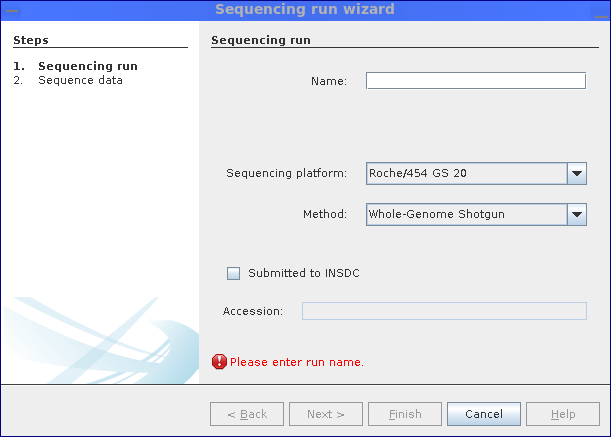
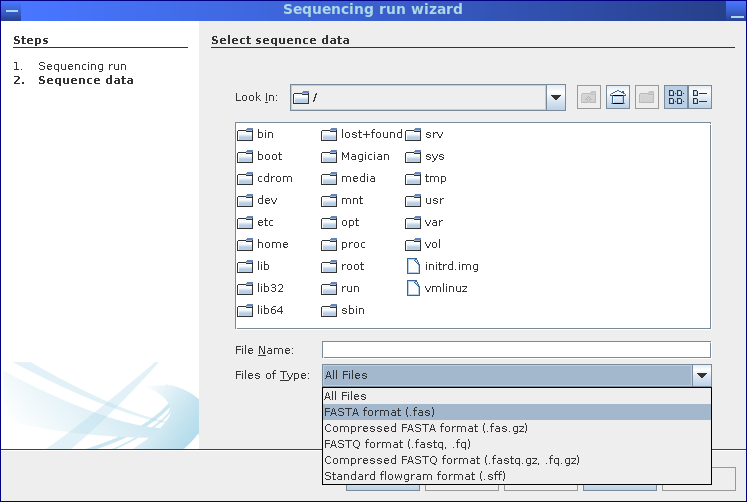

Figure 2.12:
Before sequence data can be uploaded, the employed sequencing platform and technology have
to be specified; for data already submitted to or obtained from public INSDC repositories (e.g. NCBI, EBI, DDBJ), the
corresponding accession number can be stored, as well.
|
 |
Figure 2.13:
Finally, the file containing the sequence data is selected; MGX supports all commonly used
file formats such as FASTA, FASTQ, or SFF.
|
 |
Sebastian Jaenicke, 2020-04-28